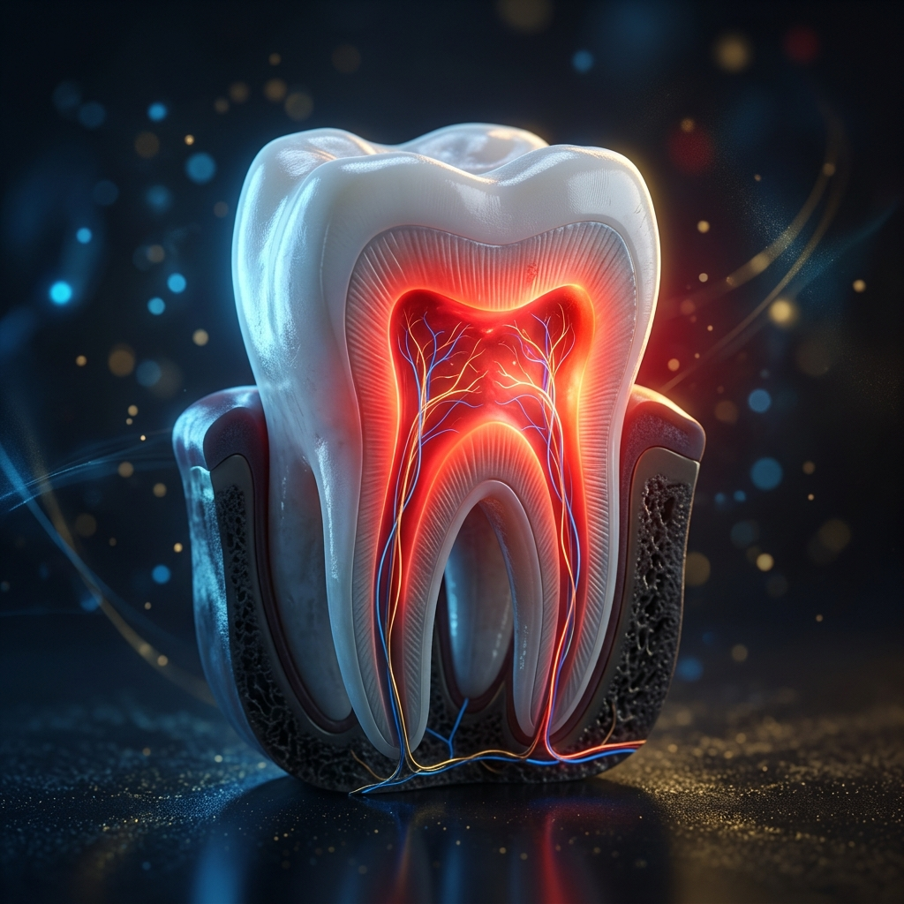

A dor de dente é considerada uma das dores mais intensas que podemos sentir. Ela nunca aparece com hora marcada e, na maioria das vezes, se agrava durante a noite ou nos finais de semana. Como especialistas em atendimento de emergência odontológica 24 horas em Alphaville, nossa equipe atende pacientes diariamente que chegam com dores insuportáveis em busca de alÃvio.
Se você está sentindo dor de dente neste exato momento, a primeira recomendação é: procure um dentista imediatamente. A dor é um sinal de alerta do seu corpo de que algo está errado. No entanto, enquanto você se desloca até o consultório, existem algumas medidas de primeiros socorros que podem ajudar.
1. O Que Fazer Para Aliviar a Dor Imediatamente?
Até chegar à cadeira do dentista, siga estes passos para evitar que a dor piore:
- Faça bochechos com água morna e sal: Isso ajuda a limpar a área e reduzir uma possÃvel inflamação gengival. O sal atua como um agente antibacteriano leve.
- Passe o fio dental com cuidado: Às vezes, a dor é causada por um resto de alimento (como casca de pipoca ou carne) preso profundamente entre a gengiva e o dente.
- Use compressas frias: Se houver inchaço no rosto, aplique uma bolsa de gelo ou compressa fria na bochecha, no lado afetado, por 15 a 20 minutos. Nunca aplique calor (como bolsas de água quente) no rosto, pois isso pode aumentar o inchaço e a infecção.
- Analgésicos de venda livre: Medicamentos como paracetamol ou ibuprofeno podem ajudar temporariamente. Siga sempre as indicações da bula e nunca coloque o comprimido diretamente sobre o dente ou gengiva (isso pode causar queimaduras quÃmicas graves).
2. O Que NÃO Fazer em Casa (Mitos Perigosos)
Na tentativa de buscar alÃvio rápido, muitos pacientes recorrem a receitas caseiras que acabam agravando o problema. Por favor, evite:
- Colocar aspirina direto no dente: O ácido acetilsalicÃlico pode queimar severamente a mucosa gengival, criando uma úlcera dolorosa além da dor de dente que você já tem.
- Fazer bochecho com álcool, cachaça ou produtos de limpeza: Além de não resolver o problema na raiz do dente, irritam profundamente os tecidos da boca.
- Tentar "furar" um abscesso: Se houver uma bolha de pus (abscesso) na gengiva, jamais tente estourá-la com agulhas. Isso pode espalhar a infecção para a corrente sanguÃnea.
3. Principais Causas da Dor de Dente
Existem várias razões para o dente doer, e apenas o dentista pode diagnosticar a causa exata com a ajuda de exames clÃnicos e radiografias. As mais comuns são:
- Cárie profunda: Atinge a polpa do dente (onde estão os nervos), causando dor latejante e contÃnua. Geralmente exige tratamento de canal.
- Abscesso dentário: Uma infecção bacteriana severa que forma uma bolsa de pus na raiz do dente. Causa muita dor, inchaço no rosto e às vezes febre.
- Dente quebrado ou trincado: Uma fratura pode expor os nervos do dente, causando dor aguda ao mastigar ou ingerir lÃquidos frios/quentes.
- Restauração solta ou infiltrada: Quando uma resina antiga cai ou apresenta infiltrações, a dentina fica exposta, gerando grande sensibilidade.
- Nascimento do siso: Dentes do siso impactados (presos no osso ou na gengiva) podem inflamar o tecido ao redor (pericoronarite), causando dor que irradia para o ouvido e garganta.
Quando Procurar a Emergência Odontológica?
Você deve procurar um dentista de emergência imediatamente se apresentar qualquer um destes sintomas:
- Dor intensa e constante que não melhora com analgésicos comuns;
- Inchaço no rosto, bochecha ou ao redor dos olhos;
- Dificuldade para engolir ou respirar;
- Dente permanente que foi arrancado em um acidente (avulsão);
- Sangramento contÃnuo após uma extração recente.
A Alphaville Odontologia funciona 24 horas por dia, todos os dias do ano. Se você está com dor, não espere até o dia seguinte. A dor aguda é caracterizada como uma urgência e o tratamento imediato previne complicações maiores (como a perda do dente ou infecções generalizadas).
Precisa de Atendimento Agora?
Saiba mais sobre nossa estrutura de plantão 24 horas em Alphaville.
Ver Serviço de Emergência 24h